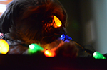

Christmas Kraft Pets
December, 2016. Pet portraits taken for the Kraft family dogs and cat.
view gallery
Paper Planes

November 2016. I got the opportunity to join the band, Paper Planes, as they played at Illinois State University's Battle of the Bands event.
view gallery
Windy City Wieners

August, 2016. Here are some samples of the work I've done for my internship at Windy City Wieners.
view gallery
Raider Portraits

October, 2014. Theses are a selection of special photos to celebrate Raider's second birthday.
view gallery
Aiesha Portraits

July, 2014. Aiesha and I worked together to create some stunning senior portraits for her. She plans to go to Bakers College to become a pastry chef!
view gallery
Makayla Portraits

July, 2013. Makayla is a photography enthusiast. We worked together to do a fun, spur of the moment portrait session.
view gallery
Landscapes

2013 - Present. Traveling is a big passion of mine and I love to document the beauty of nature around me. Here is a selection of my favorite pieces.